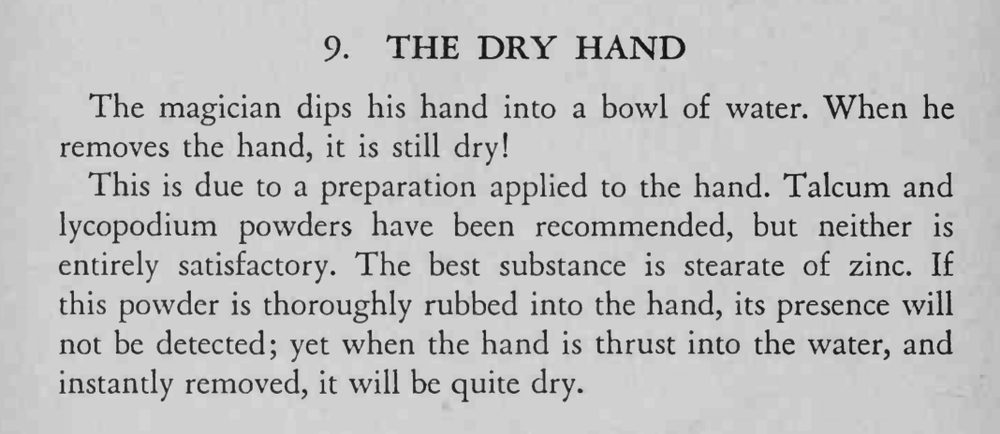

魔术师把手伸进一碗水里，抽出来时手竟然是干的。
爽身粉或石松粉效果都不够好，最好用硬脂酸锌。

The magician dips his hand into a bowl of water. When he removes the hand, it is still dry! This is due to a preparation applied to the hand. Talcum and lycopodium powders have been recommended, but neither is entirely satisfactory. The best substance is stearate of zinc. If this powder is thoroughly rubbed into the hand, its presence will not be detected; yet when the hand is thrust into the water, and instantly removed, it will be quite dry.